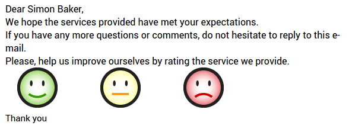

Overview
As a manager, it's not always simple to follow everything your teams do. Having a simple customer feedback can be very interesting to evaluate the performances of your teams. You can very easily gather feedbacks from your customers using Odoo.
An e-mail can be sent during the project to get the customer feedbacks. He just has to choose between 3 smileys to assess your work (Smile, Neutral or Sad).
How to gather feedbacks from customers
Before getting started some configuration is necessary. First of all it's necessary to install the Project application. To do so simply go to the apps module and install it.

Moreover, in the same menu, you have to install the Project Rating module.

Next, go back into the back-end and enter the project module. Select the Configuration button and click on Settings in the dropdown menu. Next select Allow activating customer rating on projects, at issue completion. Don't forget to apply your changes.

How to get a Customer feedback?
A e-mail can be sent to the customers at each stage of the ongoing projects.
First, you need to choose for which projects you want to get a feedback.
Project configuration
Go to the Project application, in the project settings select the Customer satisfaction option.

Email Template
Go to the stage settings (click on the gear icon on the top of the stage column, then select Edit). Choose the e-mail template that will be used. You can directly edit it from there.

Here is an email example that a customer can receive :
Note
The customer just has to click on a smiley (Smile, Neutral or Sad) to assess your work. The customer can reply to the email to add more information. It will be added to the chatter of the task.
Reporting
You have a brief summary on the satisfaction in the upper right corner of the project.
How to display the ratings on your website?
First of all it's necessary to install the Website Builder application. To do so simply go to the apps module and search for the website builder.

Moreover, in the same menu, you have to install the Website Rating Project Issue module.

Then, you will be able to publish your result on your website by clicking on the website button in the upper right corner and confirming it in the front end of the website.